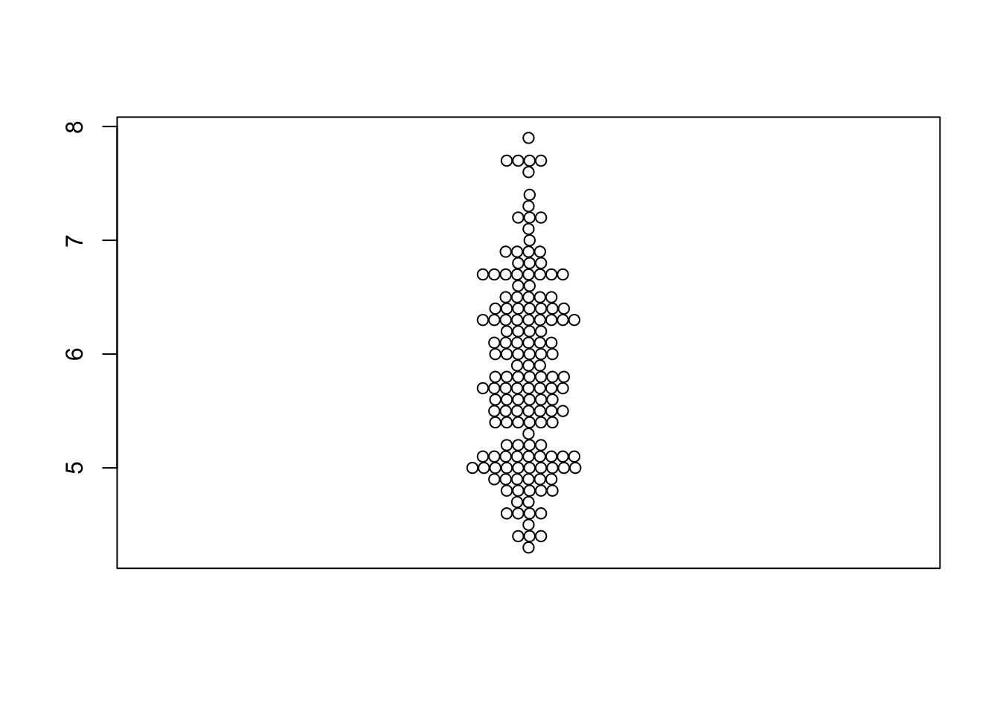
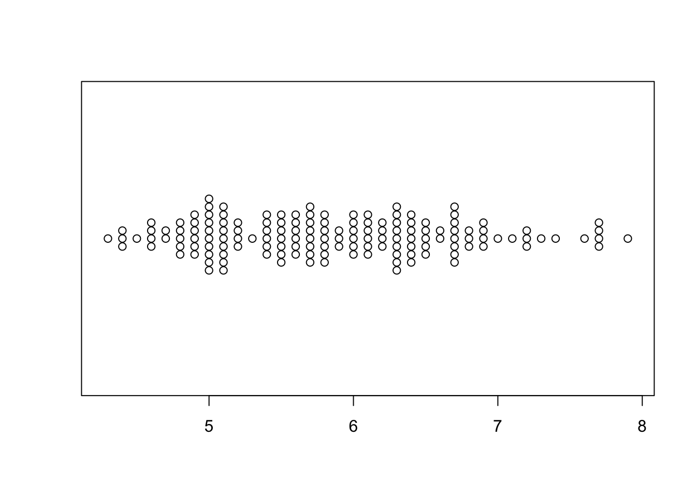

Packages
For this post, we need to install and load the beeswarm package.
We can install it from CRAN using
install.packages("beeswarm"). Then, we can load it:
Dataset
Since beeswarm plots are made to
visualize individual data points, we need a dataset
that contains numerical values. Here, we’ll use the iris
dataset, which is a built-in dataset in R.
We can easily load it:
## Sepal.Length Sepal.Width Petal.Length Petal.Width Species
## 1 5.1 3.5 1.4 0.2 setosa
## 2 4.9 3.0 1.4 0.2 setosa
## 3 4.7 3.2 1.3 0.2 setosa
## 4 4.6 3.1 1.5 0.2 setosa
## 5 5.0 3.6 1.4 0.2 setosa
## 6 5.4 3.9 1.7 0.4 setosaMost simple beeswarm
The package comes with a beeswarm() function that
creates a beeswarm plot that can be used with only 1 argument: the
numerical variable to visualize. Here, we’ll use the
Sepal.Length variable from the iris
dataset.

Flip the plot
We can easily flip the plot by setting the horizontal
argument to TRUE (or vertical to
FALSE):

Going further
In this post, we learned how to create a simple beeswarm plot using the beeswarm
package. We used the beeswarm() function to create a basic
plot.
You might be interested in how to custom the dots or how to display several groups on the beeswarm plot.
Related chart types


❤️ 10 best R tricks ❤️
üëã After crafting hundreds of R charts over 12 years, I've distilled my top 10 tips and tricks. Receive them via email! One insight per day for the next 10 days! üî•